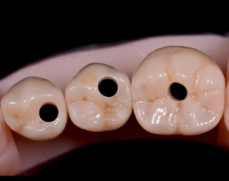
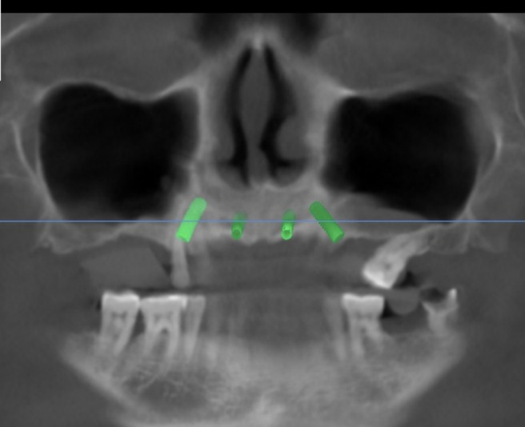

固定修复 CAD
单冠、桥、贴面、嵌体、高嵌体、内冠，以及可供技术审核和生产的修复 CAD 文件。
MW DenTech 支持需要外部设计协作的牙科技工所和数字化诊所，覆盖冠桥、美学、种植、咬合板、全口咬合重建和全弓种植重建。
核心 CAD 支持与策略性重建流程分开定义，使常规设计病例和多阶段重建病例从一开始就能清晰定范围。
面向临床位置和治疗方向已经明确的病例，提供紧凑、以生产为导向的 CAD 支持。
单冠、桥、贴面、嵌体、高嵌体、内冠，以及可供技术审核和生产的修复 CAD 文件。

微笑设计、数字蜡型、前牙形态、纹理、对称性，以及 SmileCloud 支持的美学流程。

个性化基台、种植冠、螺丝固位修复体、穿龈轮廓设计和种植修复 CAD 支持。

单颗种植导板 CAD，额外种植位按范围报价；当种植计划和导套方案明确时，也支持局部牙弓导板设计。

当咬合位置已由医生确定时，提供 Michigan 咬合板、稳定咬合板、夜磨牙垫、去程序器和常规器械 CAD。
为需要治疗排序、验证以及临时到最终修复协调的病例，提供按病例定义的策略性规划支持。
 AxisGuide
AxisGuide
为医生主导的 TMJ 敏感型修复、正畸和全口重建病例，提供基于 MRI/CBCT/STL 信息的选择性规划支持。
了解 AxisGuide 全口
全口
覆盖磨耗牙列、VDO 调整、咬合平面校正、加成蜡型、临时修复设计和最终修复 CAD 协调的综合重建。
 全弓
全弓
All-on-X 和终末牙列流程，包括全弓种植规划、手术导板设计、固定针规划、即刻负重临时修复设计、验证流程和最终全弓修复支持。

CAD 工作开始前，我们明确实际细节，使你的团队知道将交付什么以及何时可以审核。
复杂牙科资料具有敏感性。我们将付款、临床文件和项目范围分开处理，使技工所和诊所协作时不暴露不必要的患者信息。
CaseHub 将结构化病例接收、牙位选择、文件上传、状态追踪、病例讨论和交付文件集中在一个私有工作区中。它尽可能面向匿名化或最小化的临床资料；在 MW DenTech 与选定技工所和诊所验证流程期间，测试版仅限邀请使用。
在 MW 开始范围审核前，收集病例编号、处方摘要、所选牙位、截止时间、紧急程度和首批文件。
将合作伙伴问题、MW 备注、文件交付和审核反馈都关联到同一个病例编号。
在首个合作范围确定并同意数据传输预期后，才会选择性开放访问。
常规设计按长期合作逻辑定价。高级规划先报价，以便影像审核、治疗排序、验证和临时修复阶段按所需严谨度定范围。
这些匿名示例展示当病例超出菜单价 CAD 时，所需资料、规划输出和临床边界的类型。





公开起步价帮助客户测试可重复 CAD 工作。除非另有说明，列出的欧元价格为不含 VAT/IVA 的专业净费用。涉及治疗排序、影像审核或分阶段临时修复规划而影响工作量时，先按病例单独定范围再报价。
VAT / IVA 说明：在需要时适用西班牙 IVA，当前标准税率为 21%。符合条件的欧盟 B2B 客户在确认有效 VAT 信息后，可按反向征税方式开票；其他适用税项按客户所在地和发票状态处理。
价格基于真实牙科 CAD 工作量。价格仅指 CAD 设计和规划支持；除非书面报价或发票中注明，不包含打印、制造、部件、运输、关税、VAT/IVA 和其他税费。稳定合作后，可根据长期量、文件质量和修改模式提供批量价格。
菜单价 CAD 工作可在文件审核后按菜单定价。AxisGuide、全口和全弓流程需要先定范围，因为资料、排序和验证步骤决定真实工作量。
选择菜单价 CAD 服务，或将病例识别为 AxisGuide、全口或全弓重建。
排期前检查文件质量、数据库、咬合记录、影像、生产方式和传输路径。
菜单价 CAD 在范围确认后收到付款和开票指引；复杂病例收到书面报价或订金请求。
你的团队在制造或下一临床阶段前审核 CAD 或规划文件。
适用于资料、咬合位置、种植数据库和生产方式已经明确的可重复工作。
文件审核和范围确认后，按公开净价菜单定价。
申请菜单报价适用于治疗排序、影像审核、临时修复策略或多学科协调会影响范围的病例。
在书面报价、订金或分阶段付款指引前，按病例单独定范围。
提交报价申请发送口扫、相关咬合记录、输出格式、CAD/CAM 系统、材料或生产方式，以及所需交付时间。
发送扫描、照片、咬合或颌位关系记录、临时修复或蜡型参考、VDO 或咬合目标，以及范围内包含时的 MRI/CBCT。
发送 CBCT/DICOM、种植计划或建议位置、扫描杆或 MUA 记录、固定要求、即刻临时修复目标和最终修复体目标。
先发送一个有代表性的病例。设计开始前，我们确认它是否适合菜单价，或是否需要按范围报价。
给技工所和医生在发送首个病例前的简短说明。
MW DenTech 提供 CAD 设计和规划支持。价格为 CAD/设计净费用；除非另行安排并在书面报价或发票中列明，不包含打印、切削、部件、运输、关税、VAT/IVA 和其他税费。
它是服务类别清楚、资料可用、咬合位置已规定、生产方式明确且交付物可预测的常规 CAD。
复杂病例取决于治疗排序、影像审核、临时修复策略、验证记录和跨学科协调，因此必须先确认范围再定价。
当原始资料和指令不变时，包含一轮技术修改。新资料、新咬合位置、种植计划变化、治疗方向变化或新增交付物，都按范围更新处理。
使用约定上传链接或安全传输通道。尽可能移除患者识别信息，并避免在付款备注中写入临床细节。
AxisGuide 适用于选择性的医生主导 TMJ 敏感型重建病例。它提供影像信息支持的结构化路径，在分阶段咬合重建前规划、测试并验证建议下颌位置。